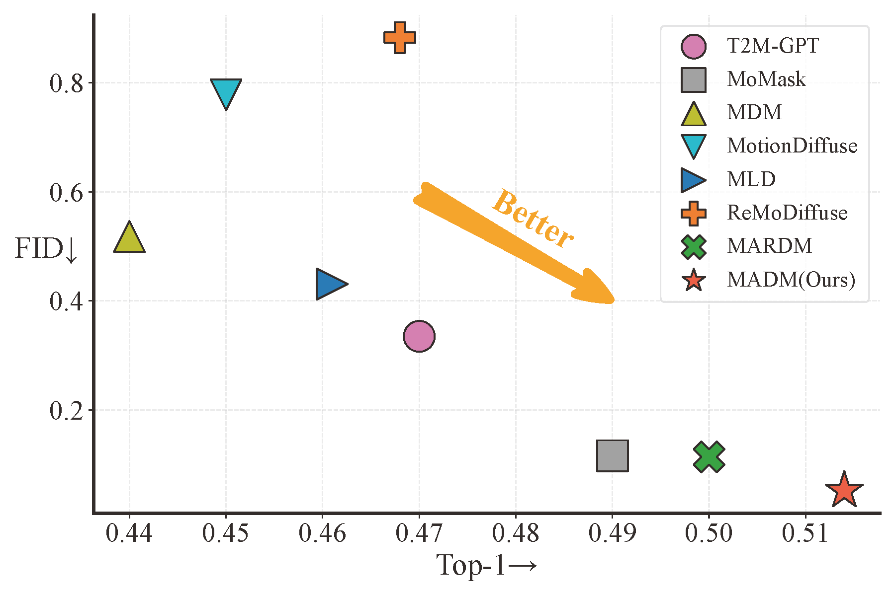
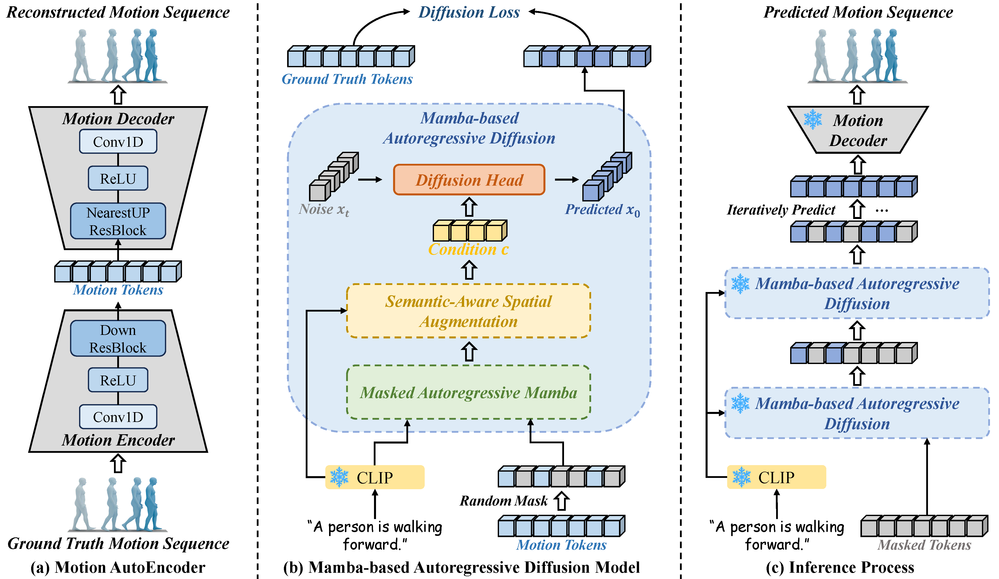
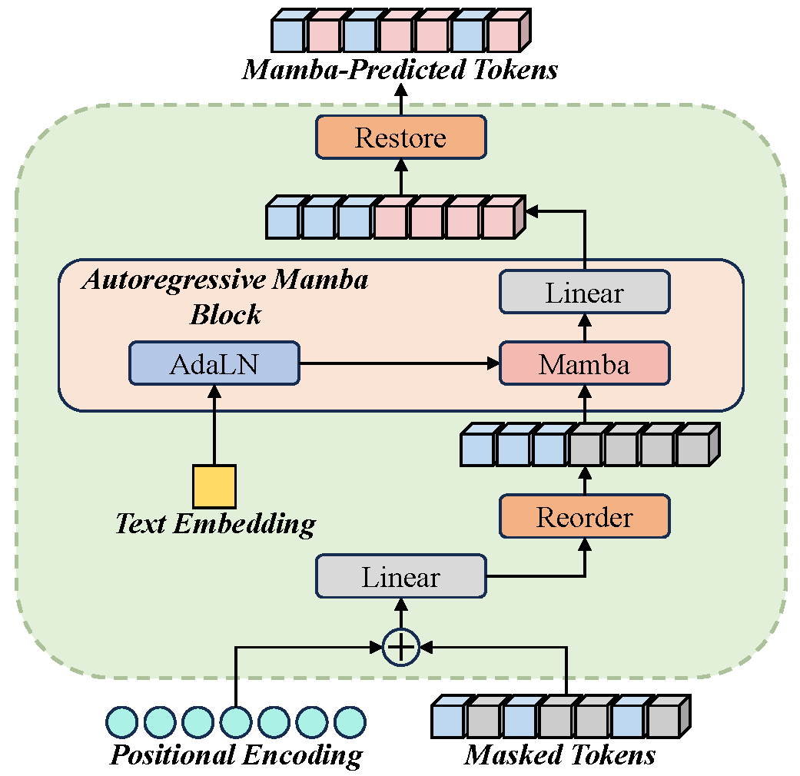
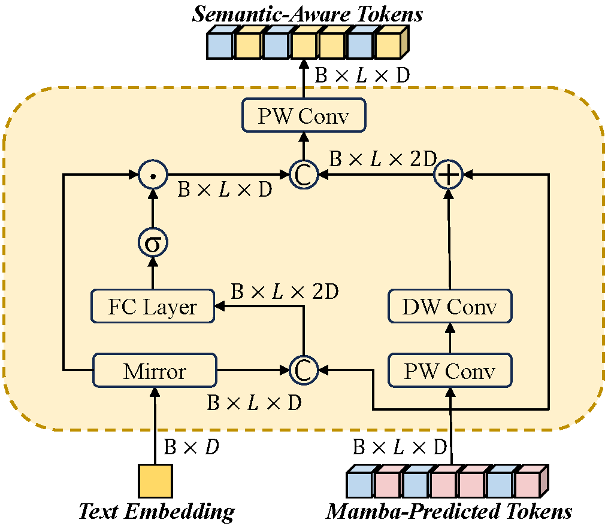
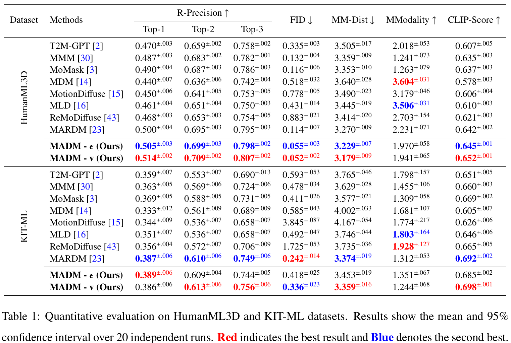
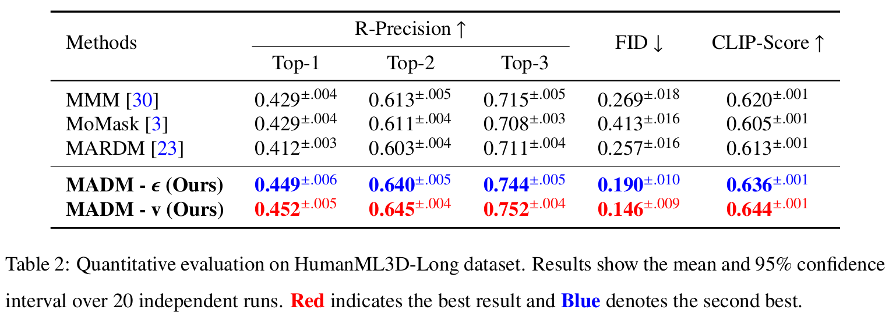

MADM: Bridging Mamba and Autoregressive Diffusion for Text-to-Motion Generation
Abstract
Generating human motion from text presents three primary challenges. First, human motion sequences often span hundreds of frames, making long-sequence modeling computationally inefficient and demanding. Second, the complex many-to-many mapping between language and motion complicates precise semantic alignment. Third, achieving global consistency alone does not ensure local spatial-temporal dependencies, resulting in motions that lack local smoothness and realistic spatial structure. To address these challenges, we propose a Mamba-based autoregressive diffusion model (MADM). First, we devise a token reordering strategy into Mamba to construct Masked Autoregressive Mamba, enabling efficient bidirectional context modeling under the masked autoregressive paradigm. Second, we design a Semantic-Aware Spatial Augmentation module that fuses textual semantics with motion features and employs lightweight convolutions to capture short-term dependencies, thereby enhancing semantic alignment, spatial awareness, and local smoothness. Finally, we incorporate a Diffusion Head into the autoregressive framework, allowing MADM to directly model the continuous motion space and avoid the vector quantization loss. Experimental results on the HumanML3D and KIT-ML datasets demonstrate that MADM achieves state-of-the-art performance with superior efficiency. On HumanML3D, it attains a Top-1 score of 0.514 and an FID of 0.052, highlighting its advantages in motion quality and semantic alignment. Notably, benefited from the linear complexity of Mamba, MADM reduces the computational cost to 5.960T FLOPs, compared to 7.131T for the Transformer baseline.
Performance Comparison
We compare MADM with state-of-the-art methods on the HumanML3D dataset. As shown in the chart below, our model achieves a superior trade-off between motion quality (FID) and semantic alignment (Top-1 Precision).

MADM (Ours) outperforms existing diffusion and autoregressive models, achieving the lowest FID (0.052) and competitive R-Precision.
Method

MADM Architecture

Illustration of our Masked Autoregressive Mamba (MAM)

Illustration of our Semantic-Aware Spatial Augmentation (SASA)
Text-to-Motion
the man dances the cha cha.
a person walks backwards several steps.
the person moves backwards as if pushed by someone in front of them.
Qualitative Results
Text: a person plays a violin with their right hand in the air and their left hand holding the bow.
Momask
MARDM
Ours
Text: a man walks forward a few steps, raises his left hand to his face, then continues walking in a circle.
Momask
MARDM
Ours
Text: the person paces to his left, then to his right, and finally to his left again.
Momask
MARDM
Ours
Quantitative Results

